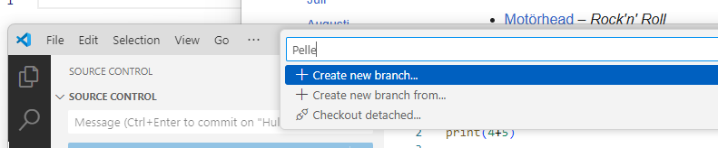
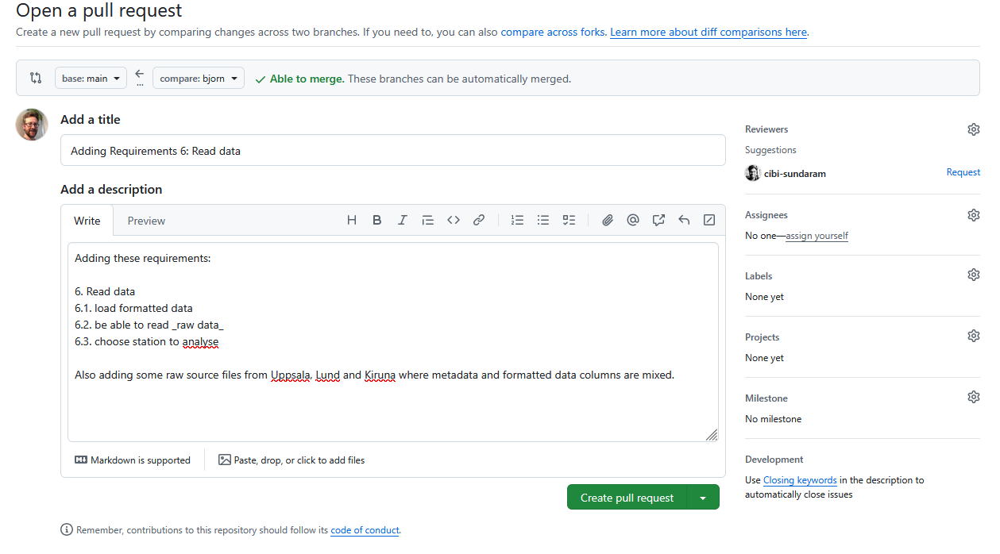

Git branches¶
Questions
- How to not ruin working code when adding new features?
- How to work on parallel tracks (many developers, versions)?
- How to fix mistakes?
Learning outcomes of 'Branches'
-
learners can
- explain and evaluate the usefulness of branches
- create, switch and delete a
gitbranch locally
Instructor notes
Prerequisites are:
- git basics
Lesson Plan:
- Total 50 min
- Theory 15
- Exercise 25
- Discussions 10 min
Changes
- practical examples than just explain the concept.
- Git branch couple to SDLC??
- exercises
- advanced exercises
Branching and merging¶
Software development is often not linear:
- We typically need at least one version of the code to "work" (to compile, to give expected results, ...).
- This is the main branch (former master)
- At the same time we work on new features, often several features concurrently. Often they are unfinished.
- We need to be able to separate different lines of work really well.

Isolated tracks of work
The strength of version control is that it permits the researcher to isolate different tracks of work, which can later be merged to create a composite version that contains all changes.
- We see branching points and merging points.
- Main line development is often called
masterormain. -
Other than this convention there is nothing special about
masterormain, it is just a branch. -
A group of commits that create a single narrative are called a branch.
- There are different branching strategies, but it is useful to think that a branch tells the story of a feature, e.g. "fast sequence extraction" or "Python interface" or "fixing bug in matrix inversion algorithm".
Three ways to name a branch
- Issues: #45: Concrete examples
- Features: GUI module
- Personal: Björn
Typical workflows¶
One typical workflow:
- create branch
- switch to it
- work, work, work, ..., and test
- add and commit
- once feature is ready, switch back to main
- make clear which branch you are in
- merge new-feature to present branch
- remove branch
In VS Code
- Here is where you handle branches
-
- create a new branch
Click and you have the possibility to

- and switch between existing branches

In command line
git branch new-feature # create branch, switch to it
git add/commit # work, work, work, ..., and test
git switch master # once feature is ready, switch back to master
(git checkout <branch>) # Old command for switching branch, but also going back in history to earlier commit
git branch # make clear which branch you are in
git merge new-feature # merge work to present branch
git branch -d new-feature # remove branch
On GitHub
- You may branch of from
mainordevelop(ONLY if it exists).

- Click on 1, type your branch name at 2 (in this case,
richel), then click 3. - To view all branches
- The overview
Git graph¶
- We can get an overview of graphs

VS Code

Graph alias in command line
An important alias
- We can define an alias in Git, to be able to nicely visualize branch structure in the terminal without having to remember a long Git command.
This will enable you to use git graph for short
Example
$ git graph
* 000b440 (HEAD -> main) rm print
| * 4d4acaf (modularity) 4 modular files
|/
| * 2d4e252 (jupiter) add jupiter
|/
* b9465e4 (origin/main) planet.py documentation
* 6a416b5 add folders and planet code
gitGraph
commit id: "add folders and planet code"
commit id: "add planet.py documentation"
branch jupiter
checkout jupiter
commit id: "add jupiter"
checkout main
branch modular
checkout modular
commit id: "4 modular files"
checkout main
commit id: "rm print"Overview¶
Overview workflow

Test
- What is a branch?
- What is the problem that branches alleviate?
- What is the name/names of the most important branch?
- What is our git branching setup?
- What is the goal of that setup?
- Why do we use that setup instead of a different one?
- What is the purpose of each of those branches?
- Does creating a branch create a new version? Why?
- Does changing a branch change the content of your local computer? Why?
- Does deleting a branch create a new version? Why?
The project: From requirement to branch¶
Workflow of project
- requirement
- issue
- branching
- merging/pull request
- code review
Let's look at Bj√∂rn's input and practice code review already (together)¶
Steps:
- branching
- merging/pull request
- code review
- issue
Björn's new requirements, using GitHub
- Updated information on requirements
Commit_add data requirements
- Björn used a branch
bjorn branch

- Wants to merge
No contribution info

- Need to go to root!
Compare & pull request_bjorn

- Open pull request
PR_add_reqs6

- We find all pull requests (PRs) in the upper menu!
PR_overview
Approve Björn's new requirements
- Lets look and fix together
- Code review!
Look at Björn's new Issue
- Do we agree?
- Add to the issue the namings of 2 feature branches from Req 6.1-2 to be used in exercise 1.
Three ways to name a branch
- Issues: #45: Concrete examples
- Features: GUI module
- Personal: Björn
Exercises¶
Learning outcomes
- Create, switch and delete a
gitbranch - Build up experience using git without troubleshooting
Exercise 1: Create a and switch to a project branch¶
Use GitHub
- The 3 groups create one branch each according to issue above.
- Go to the branch
- Create a .py file which can be a function in the full program with a good name in the
src/weatherdirectory - Copy-paste the suitable example below.
- (If there is time) Make a docstring describing what the function should do
- We will not go further with the file now, so let's go back to
main
Example code 6.1 (read Uppsala 1722-2022) using pandas
Example code 6.2 (read other Swedish stations) using pandas
Example code 6.3 (connect station name with file name)
Make a simple docstring!
Workflow
gitGraph
commit id: "Before start"
commit id: "Branching version"
branch featurename
checkout featurename
commit id: "New python file"
checkout mainAnswer
- For our shared GitHub repository, create a branch with the name
- You may branch of from
mainordevelop(ONLY if it exists).
- Click on 1, type your branch name at 2 (in this case,
richel), then click 3. - Now do the work in the branch.
- Save/commit
- DO NOT MERGE!
- Click on Branch and choose
main - Done!
Exercise 2: create, switch and delete a test branch LOCALLY¶
gitGraph
commit id: "Before start"
commit id: "Branching version"
branch sven
checkout sven
commit id: "Modify my file"-
For our shared GitHub repository, create a branch with your first name that is unique, e.g.
sven,sven_svenssonorsven_svensson_314. You may branch off frommainordevelop(if it exists). You may use the web interface (easiest!) or use VS Code -
On your local computer:
- update the repository (pull)
- switch to the new branch
- change the content of the repository
by creating a file in
learners/[your_name]/[your_name]_is_on_[your_branch_name] - push your changes online.
- On GitHub, verify that your changes on your branch can be found online
- On your local computer, switch to the main branch, as we'll delete the branch you are on now
- Delete your branch (i.e. the one with the unique name). You may use the web interface (easiest!) or use the VS Code
- On your local computer, update your code (pull)
Answers
- For our shared GitHub repository, create a branch with your first name that is unique, e.g.
sven,sven_svenssonorsven_svensson_314. You may branch of frommainordevelop(if it exists).
If you wish to use the command line
- On your local computer:
- switch to the new branch
Switch to the new branch, for example, richel, by doing:
- On your local computer:
- change the content of the repository, for example, by creating a file in
learners/[your_name]/[your_name]_is_on_[your_branch_name]
This can be any change you'd like. To create a file under Linux (and maybe this works on other operating systems too), one can do:
After the change, commit these:
- On your local computer:
- push your changes online.
Do:
And your code may end up online.
If that does not work, do:
and try pushing again, maybe multiple times, as many people are pushing to the shared repo.
git push doesn't work with new branch
- you always have to pull before a push:
- You may need to be more detailed:
- On GitHub, verify that your changes on your branch can be found online

Make sure you look at the correct branch, as displayed at 1. Then your commit message shows up at 2.
- On your local computer, switch to the main branch, as we'll delete the branch you are on now
Switch to the main branch, for example, main, by doing:
- Delete your branch (i.e. the one with the unique name). You may use the web interface (easiest!) or use the command line

Click on 'Branches', as shown in the image above.

Click on garbage bin, as shown in the image above.

The branch will now be deleted, as shown in the image above.
- On your local computer, update your code
Do:
This is for VS Code
- On your local computer:
- update the repository
On your local computer, navigate to the folder of the shared project and update: pull/sync
- On your local computer:
- switch to the new branch
Switch to the new branch, for example, richel, by doing:
- On your local computer:
- change the content of the repository, for example, by creating a file in
learners/[your_name]/[your_name]_is_on_[your_branch_name]
This can be any change you'd like.
After the change, commit these ("+" and "commit")
- On your local computer:
- push your changes online.
Push "Sync"
And your code may end up online.
If that does not work, try pushing again, maybe multiple times, as many people are pushing to the shared repo.
- On GitHub, verify that your changes on your branch can be found online
- Make sure you look at the correct branch, as displayed by the "drop-down button".
- Then your commit message shows up in the yellow section
- ”Ignore if a pull request shows up”
- On your local computer, switch to the main branch, as we'll delete the branch you are on now
Switch to the main branch.
- Delete your branch (i.e. the one with the unique name).
- You may use the web interface (easiest!) or use VS Cde
In VS Code
GitHub
Click on 'Branches', as shown in the image above.
Click on garbage bin, as shown in the image above.
The branch will now be deleted, as shown in the image above.
- On your local computer, update your code
Sync or Pull again!
Need a video for command line?
See the 'Programming Formalisms: git branch exercise' YouTube video
Extra: git diff¶
Show unstaged/uncommitted modifications
- When you are done editing the files, try "git diff"
- When you select a file in the Source Control view, the editor shows a diff view that highlights the file changes, compared to the previously committed file.

- Press "M"

In console
- You can use arrows or enter to scroll the output and quit with
q. - You will see some things like this.
Output from 'diff'
diff --git a/ingredients.txt b/ingredients.txt
index 4422a31..ba8854f 100644
--- a/ingredients.txt
+++ b/ingredients.txt
@@ -2,3 +2,4 @@
* 1 chili
* 1 lime
* 2 tsp salt
+* 1/2 onion
diff --git a/instructions.txt b/instructions.txt
index 7811273..2b11074 100644
--- a/instructions.txt
+++ b/instructions.txt
@@ -4,3 +4,4 @@
* squeeze lime
* add salt
* and mix well
+* enjoy!
Summary¶
git switch -b wild-idea # create branch, switch to it, work, work, work ...
git switch main # realize it was a bad idea, back to main/master
Parts to be covered!
- ☑ Source/version control
- Git
- We have a starting point!
- GitHub as remote backup
- branches
- ☑ Planning
- ☑ Analysis
- ☑Design
- ☑ Testing
- Different levels
- ☐ Collaboration
- GitHub
- pull requests
- ☐ Sharing
- ☑ open science
- ☐ citation
- ☑ licensing
- ☐ Documentation
- ☑ in-code documentation
Keypoints
- A branch is a division unit of work, to be merged with main sometime
- Both git locally and GitHub can be used
- You can delete a branch safely after merging
See also
Reference Git¶
- Main git book
- Pro Git
- Tsitoara, Mariot, and Mariot Tsitoara. "Git best practices." Beginning Git and GitHub: A Comprehensive Guide to Version Control, Project Management, and Teamwork for the New Developer (2020): 79-86.